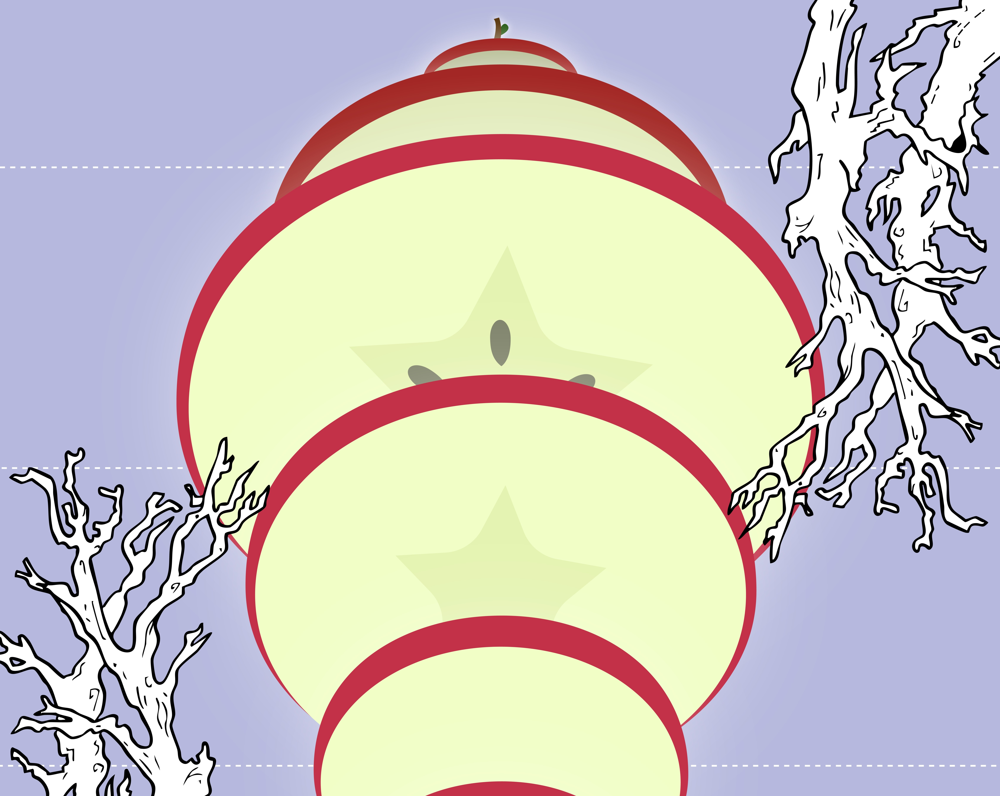
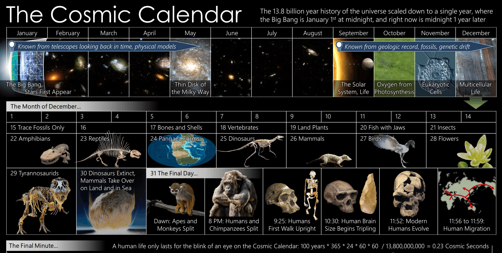
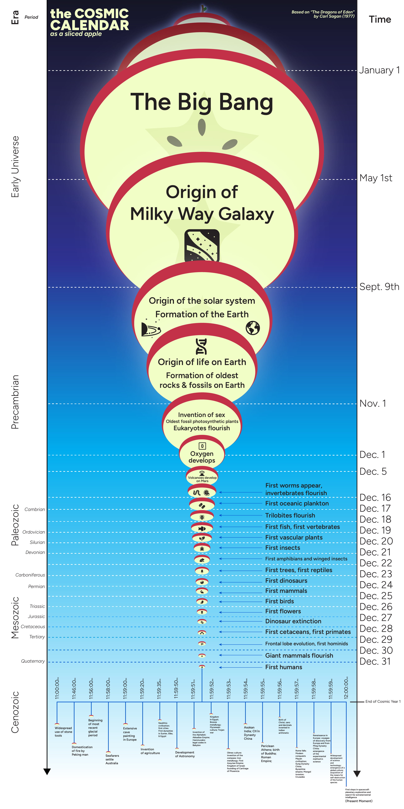
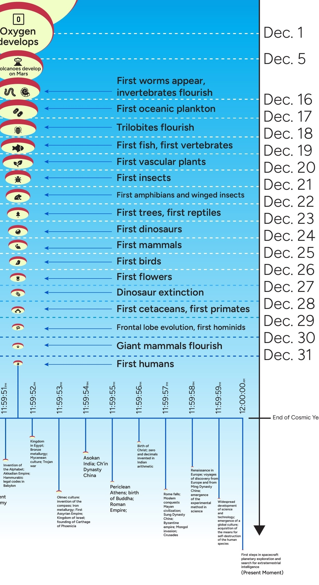

Cosmic Apple
ROLE
Solo Designer
TOOLS
Illustrator, Procreate, After Effects
SKILLS
Information Design, Animation
1OVERVIEW
The task for this project was to visualize the cosmic calendar, tackling a core challenge of information design: translating multi-dimensional data into a clear 2D format.
The only constraints were that the design had to be a maximum of 6ft in any direction.
For context, the cosmic calendar is a timeline that shrinks the entire history of the universe into a single standard 12-month calendar. Founded by astronomer Carl Sagan in his book The Dragons of Eden.

Carl Sagan's Cosmic Calendar.
2GOALS & PIVOTS
Questions:
a. How can I increase the information dimensions beyond calendar squares and enable the viewers to fully grasp the broader context?
b. How can I make my approach engaging and thought-provoking without losing detail or sacrificing information density?
The main things I wanted to highlight after observing the calendar:
1. the amount of time the events took up
2. how the events that take up more time in calendar are grandiose and contain more impact in the long term of things.
Initial sketches were aimed at spirals, tree rings, geological map of layers, and eventually thought about Russian nesting dolls where circles live within one another.

Brainstorming sketches of how else to visually represent the calendar.
3DEVELOPMENT
The nesting doll idea led to a landscape design of the circles. After some feedback and adjustments, I rotated them on their side to center-align down the middle and bingo!
The core contains the large central slices: the Big Bang, the formation of the Milky Way Galaxy, and Earth - the core of our existence. The left side is labeled with the era and period while the right is the time in calendar year.
Following down as the apple rounds, the slices get smaller and thinner until we reach the period of human activity on Earth. I wanted to communicate that in the vastness of all that we know with the Universe’s origins, we only exist in the context of what came before us.

Full design.

Closer look.
4VISUAL DESIGN
I kept the color palette simple to leave room for the text to breath. The background gradient represents the travel from deep space down into Earth’s atmosphere.
Simple iconographic symbols were used to help represent each data point.
An apple famous in literature, mythology, fairy tales, and folklore, and is representative of knowledge itself, felt like the perfect metaphor for the Universe’s history.
5OUTCOMES & TAKEAWAYS
This was a fun project that has sparked my interest in information design and tackling similar projects. Specifically, transforming complex data and dense information into a thoughtfully designed and digestible format thatinvites viewers to learn from.
As I began developing this, I imagined a large print posted up in a science or space museum for children and families for education.